Setup
- Requirements:
- Node.js
- Getting started:
git clone https://github.com/aaryanshroff/dsc-workshop
cd dsc-workshop
npm run dev
src/map_generator.js
Pre-reqs
- JavaScript
- Dot product of vectors
- Derivatives
Procedural Generation
- Algorithmic world generation
- Goals:
- Interesting $\Rightarrow$ Randomness
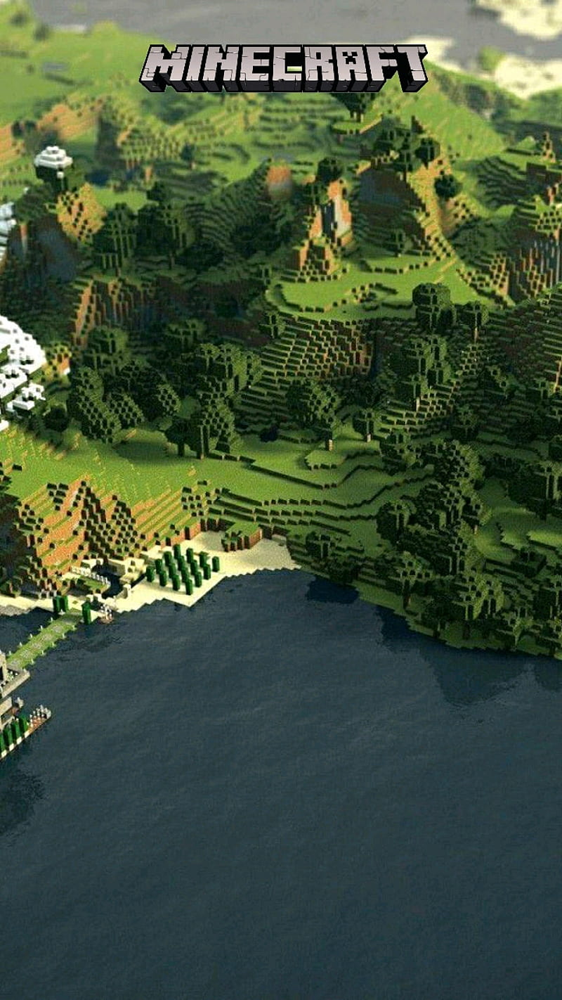
Not all randomness is equal
True Randomness
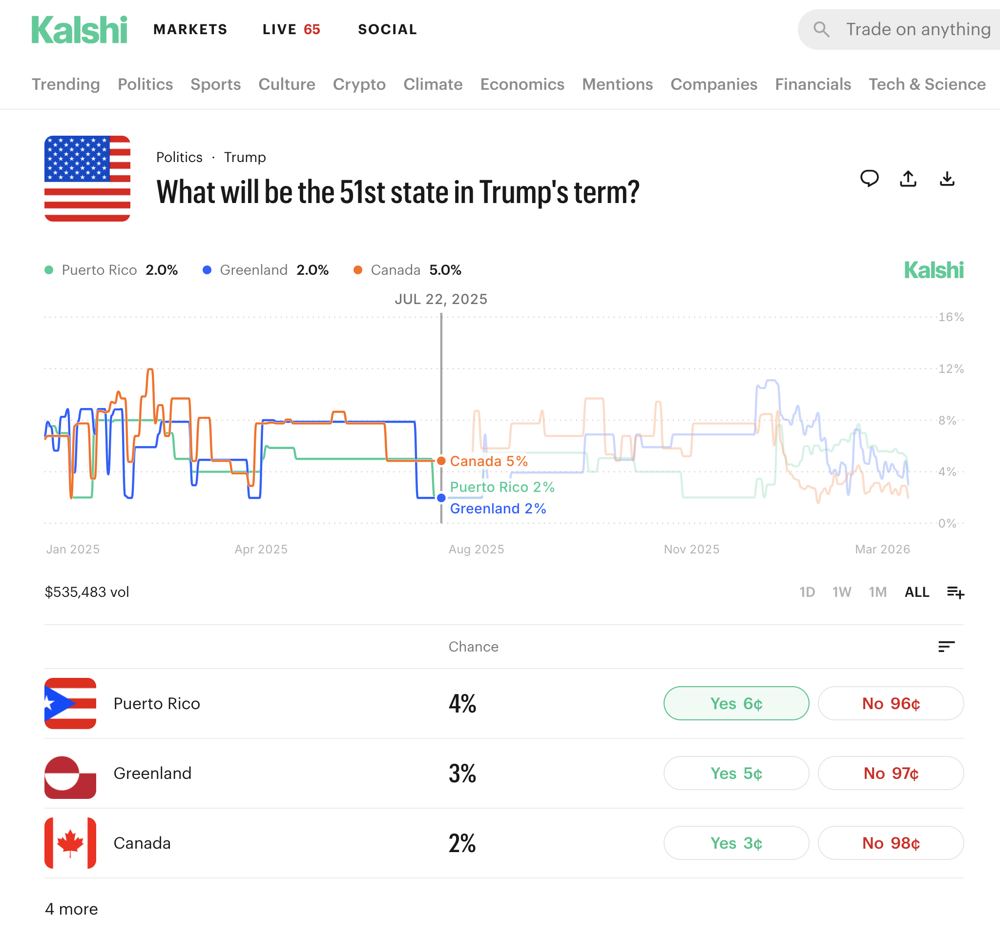
Pseudo-randomness
True Randomness: Sources
- Coin toss, dice rolls
- Natural phenomenon
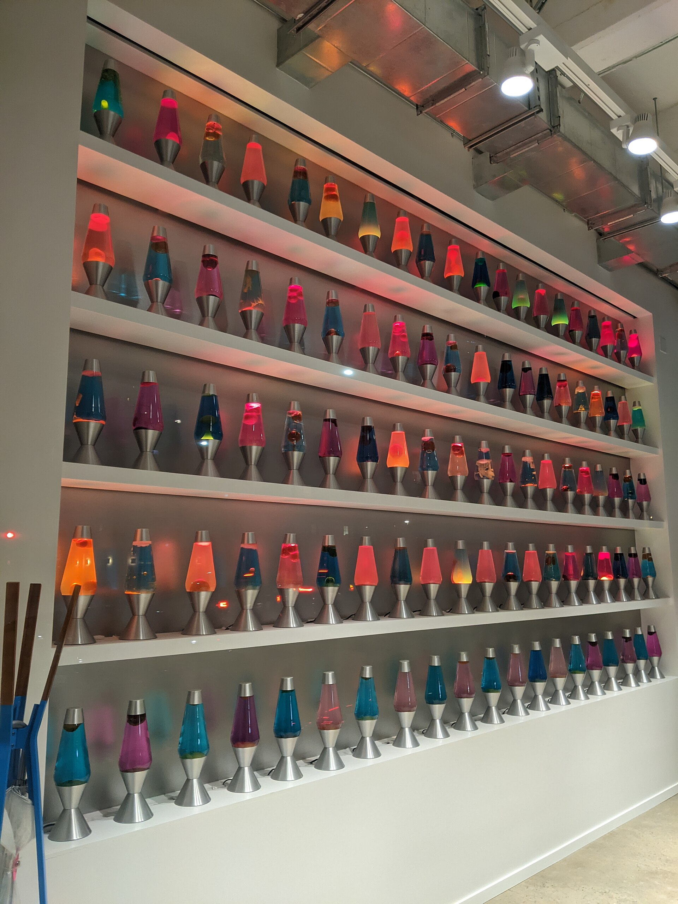
True Randomness: Problems
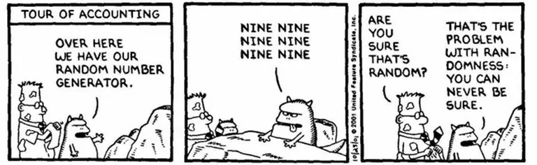
- Computers are deterministic
- Really expensive to measure real-world phenomenon
- Hard to reproduce!
Pseudo-randomness
class RNG {
constructor(seed) { this.val = seed; }
next() {
this.val = (1103515245 * this.val + 12345) % 2147483648;
return this.val;
}
}
const rng = new LCG(12345);
console.log(rng.next()); // 1406932606
console.log(rng.next()); // 654583775
- Seed enables reproducability
- Faster/cheaper than taking pictures of lava lamps all day!
- Linear Congruential Generator
Procedural Generation
- Goals:
Randomness
Pseudo-randomness- ...is that enough?
Procedural Generation
- Goals:
Randomness
Pseudo-randomness-
Spatial correlation
(smooth transitions between random values)
Value Noise
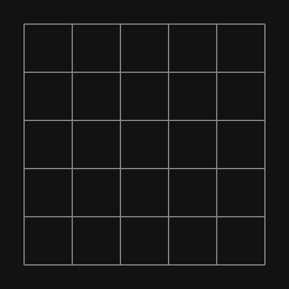
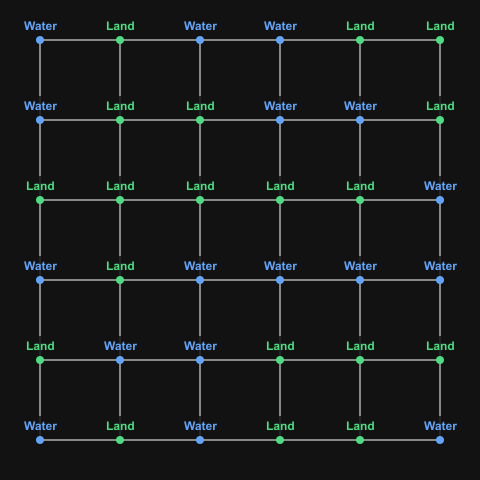
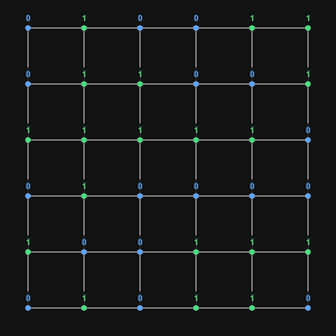
What colour should the points within the cells be?
Linear Interpolation (1D)
function lerp(startValue, endValue, t) {
return startValue + t * (endValue - startValue);
}

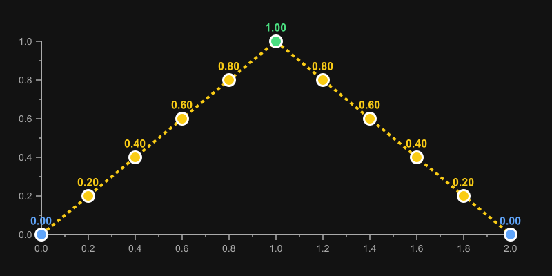
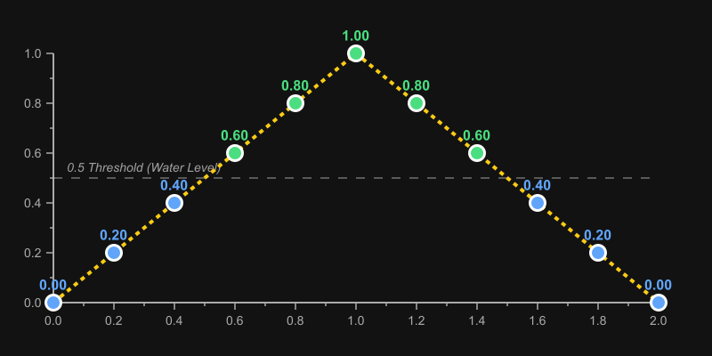
Bilinear Interpolation (2D)
function lerp(startValue, endValue, t) {
return startValue + t * (endValue - startValue);
}
function bilinearInterpolate(
topLeftValue,
topRightValue,
bottomLeftValue,
bottomRightValue,
percentX,
percentY
) {
const topEdgeValue = lerp(topLeftValue,
topRightValue, percentX);
const bottomEdgeValue = lerp(bottomLeftValue,
bottomRightValue, percentX);
return lerp(topEdgeValue, bottomEdgeValue,
percentY);
}
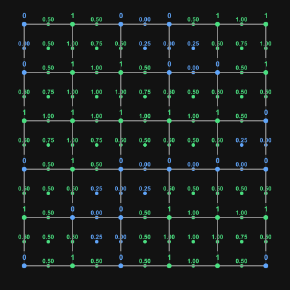
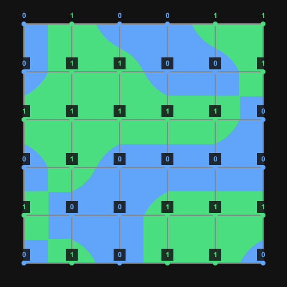
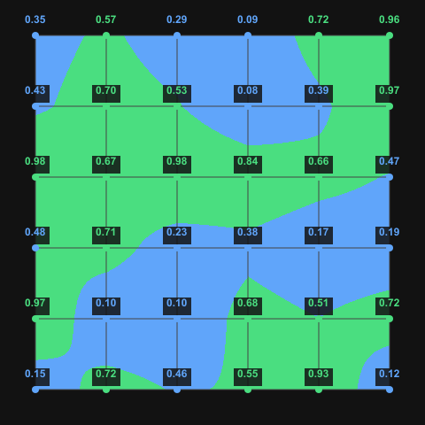
Problems?
1D interpolation with fading
function fade(t) {
return 6 * t**5 - 15 * t**4 + 10 * t**3;
}
function lerp(start, end, t) {
return start + t * (end - start);
}
function smoothLerp(start, end, t) {
return lerp(start, end, fade(t));
}
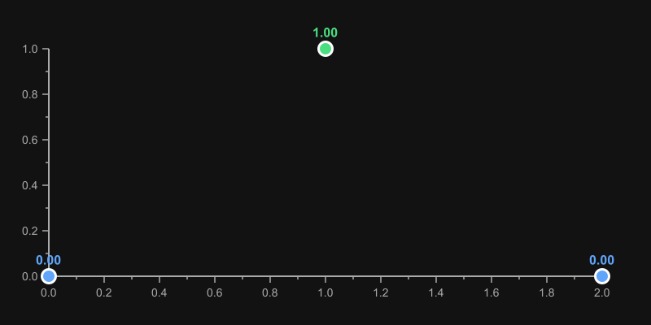
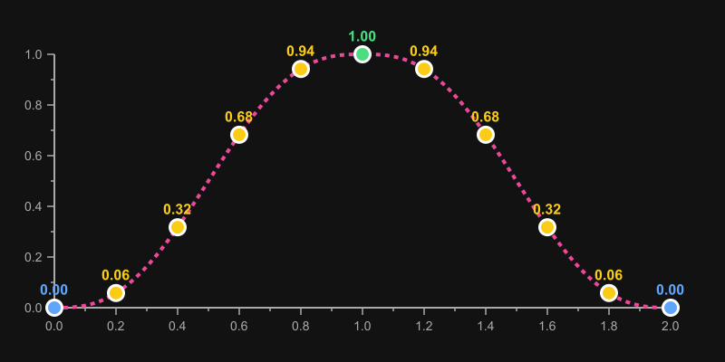
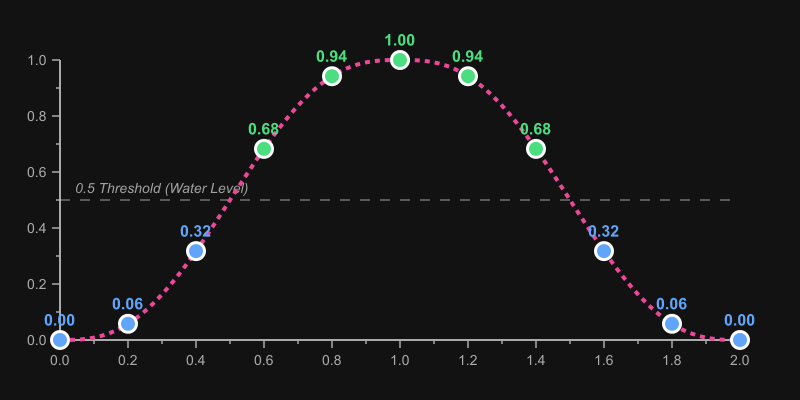
- Pick any $\text{fade}(t)$ as long as $\text{fade}'(0) = \text{fade}'(1) = 0$
2D interpolation with fading
function fade(t) {
return 6 * t**5 - 15 * t**4 + 10 * t**3;
}
function lerp(start, end, t) {
return start + t * (end - start);
}
function smoothBilinear(v00, v10, v01, v11, x, y) {
const top = lerp(v00, v10, fade(x));
const bottom = lerp(v01, v11, fade(x));
return lerp(top, bottom, fade(y));
}
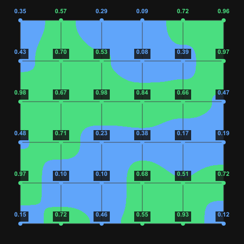
Value Noise: Problems
- Sharp transitions within cells $\Rightarrow$ Fixed by using floats
- Sharp transitions between cells $\Rightarrow$ Fixed by using fading
- Blobby (axis-aligned) map $\Rightarrow$ ???
Perlin Noise

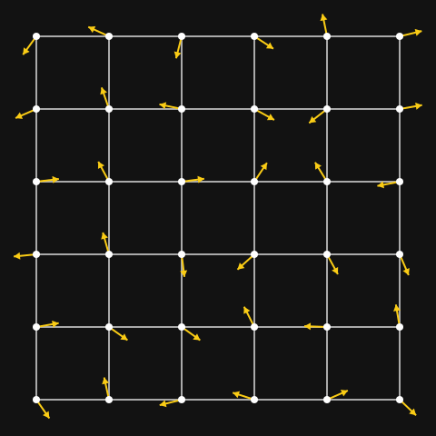
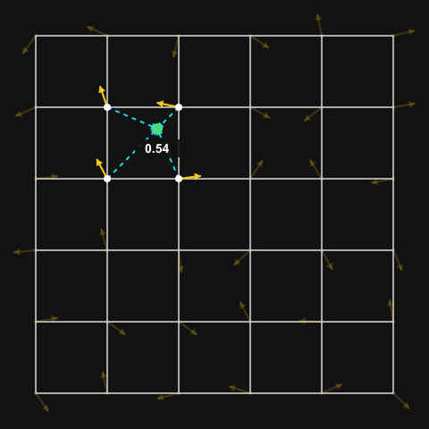
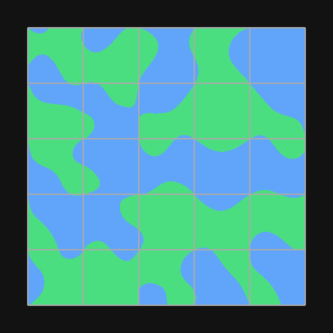
Biomes
- Perlin noise is just a grid of values $\in (0, 1)$
-
$\Rightarrow$ what you do with the grid is upto you
(not limited to land/water) -
E.g.
- Elevation grid: Ocean $\rightarrow$ Beach $\rightarrow$ Plains $\rightarrow$ Mountain
- Moisture grid: Dry $\rightarrow$ Normal $\rightarrow$ Wet
- High Elevation + Low Moisture = Scorched Mountain
- High Elevation + High Moisture = Snowy Peak
- Low Elevation + Low Moisture = Desert
- Low Elevation + High Moisture = Swamp / Jungle
Biomes


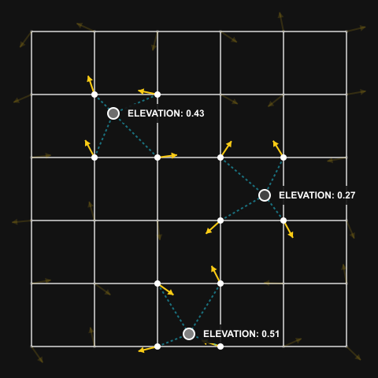
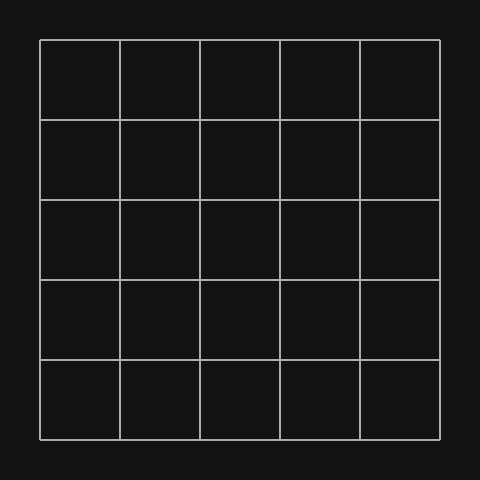
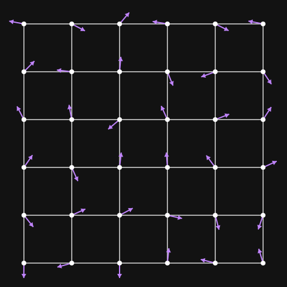
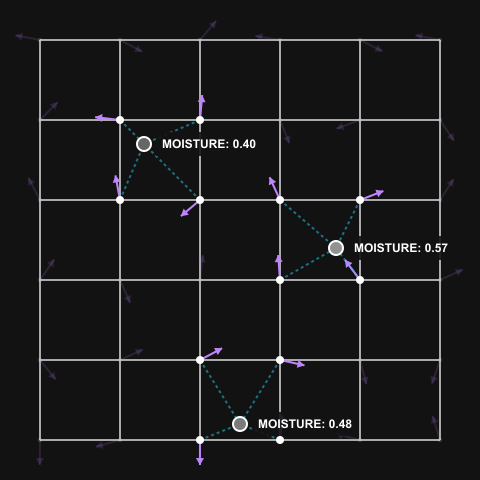
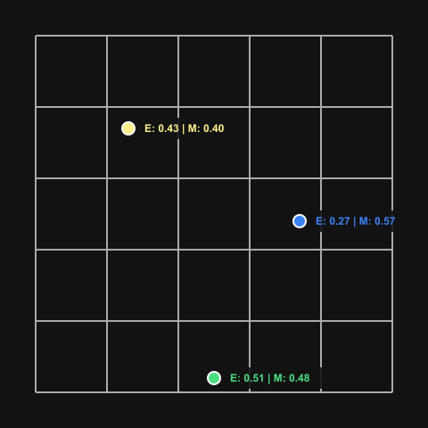
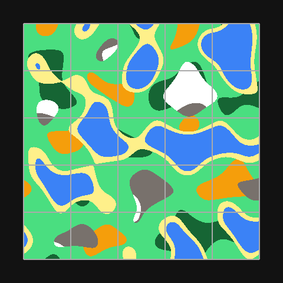